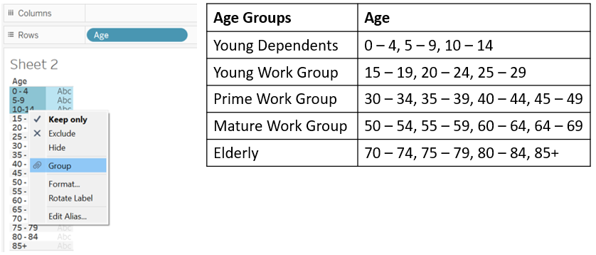
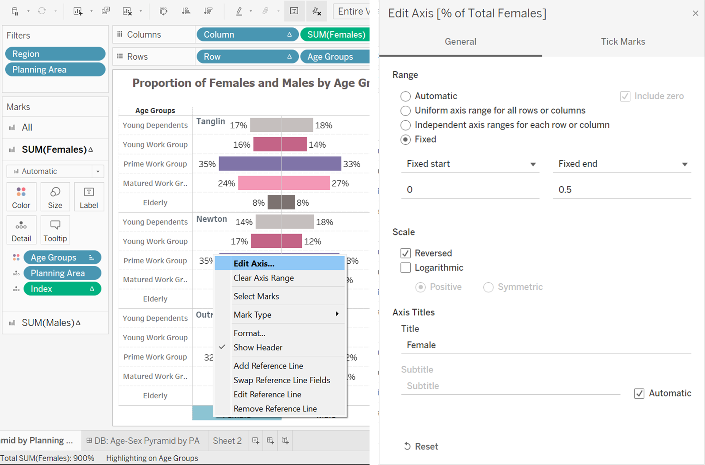
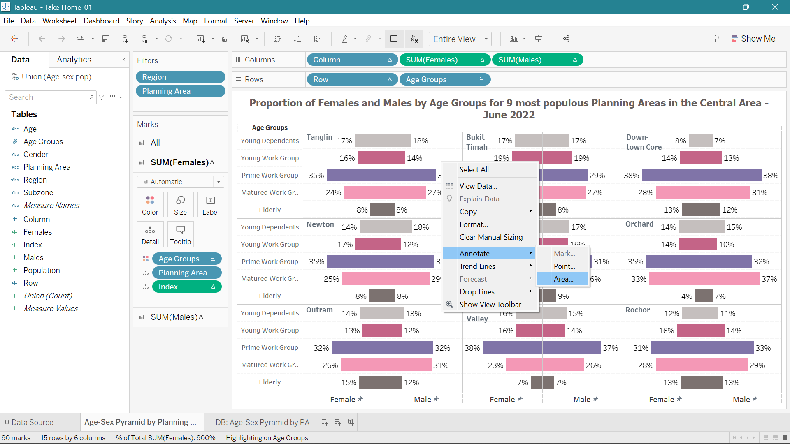

Take Home Exercise 1
1. Data Processing
1.1. Downloading the datasets
The datasets, ‘Population of Males by Age Groups and Planning Areas’ and ‘Population of Females by Age Groups and Planning Areas,’ were sourced from Singapore’s Department of Statistics (SingStat) website. Click on this link for more information.

1.2. Data Processing
After downloading the data, the requisite worksheets were cleaned and organized for analysis. All ‘Planning Area’ sections by ‘Age’ were combined. The process was applied to both ‘Population of Males by Age Groups and Planning Areas’ and ‘Population of Females by Age Groups and Planning Areas’ MS Excel worksheets.

1.3. Pivoting the worksheets in Tableau
For better analysis in Tableau, it is preferable to have data organized as long and lean rather than short and wide. Hence, the short and wide data structure in MS Excel worksheets were opened in Tableau, and all the five-year age bands were pivoted for long and lean data structure. This process is done individually for ‘Population of Males by Age Groups and Planning Areas’ and ‘Population of Females by Age Groups and Planning Areas’.
The MS Excel worksheet is first loaded to Tableau.

Next, all five-year age bands are selected and pivoted to transform the data structure.

Using ‘View Data’ option, the long and lean data – for both males and females – is downloaded as CSV files.


The column names retained in each MS Excel worksheets post pivoting were ‘Planning Area’, ‘Subzone’, ‘Age’ (for five-year age bands), ‘Gender’ (Male or Female, depending on the data worksheet), and ‘Population’ (representing the corresponding population count).

2. Creating the Tableau Dashboard
2.1. Union of two datasets
After loading the MS Excel worksheets (note: Male and Female population worksheets should be saved in the same MS Excel workbook), we use the ‘New Union’ option in Tableau to combine the ‘Population of Males by Age Groups and Planning Areas’ and ‘Population of Females by Age Groups and Planning Areas’. This gives us a combined long and lean data structure by Planning Area, Subzone, Age Groups, Sex, and Population (actuals).

2.2. Creating new variables for 3*3 panel charts
To divide the Tableau worksheet into nine panels of 3 by 3 matrix, we created three calculated fields – Index, Column, and Row. The calculated field is created in the working Tableau sheet. Click on the arrow next to the Data field and select Create Calculated Field.

The formula for these calculated fields are used to derive the logic in the image below.
 Such panelling helps to aesthetically divide nine planning areas in the worksheet and makes the trellis charts both beautiful and insightful.
Such panelling helps to aesthetically divide nine planning areas in the worksheet and makes the trellis charts both beautiful and insightful.
2.3. Creating new variables aggregating the female and male population
For the left-side of the trellis chart, we represented the proportion of female population in respective planning areas and on the right-side, we represented the proportion of male population. To do this, we create two conditional calculated fields, one for each female and male.

2.4. Creating Region variable for assigning the Planning Areas
The planning areas are geographically distributed into Central Region (including Core Central and Other Central Area), East Region, North-East Region, North Region, and West Region. Based on geographic location, the Planning Areas are assigned their respective Region as follows –
IF ([Planning Area] = “Bishan” OR [Planning Area] = “Bukit Merah” OR [Planning Area] = “Geylang” OR [Planning Area] = “Kallang” OR [Planning Area] = “Marine Parade” OR [Planning Area] = “Museum” OR [Planning Area] = “Queenstown” OR [Planning Area] = “Simpang” OR [Planning Area] = “Singapore River” OR [Planning Area] = “Southern Islands” OR [Planning Area] = “Straits View” OR [Planning Area] = “Toa Payoh”) THEN “Other C”
ELSEIF ([Planning Area] = “Bukit Timah” OR [Planning Area] = “Downtown Core” OR [Planning Area] = “Marina East” OR [Planning Area] = “Marina South” OR [Planning Area] = “Newton” OR [Planning Area] = “Novena” OR [Planning Area] = “Orchard” OR [Planning Area] = “Outram” OR [Planning Area] = “River Valley” OR [Planning Area] = “Rochor” OR [Planning Area] = “Tanglin”) THEN “Core C”
ELSEIF ([Planning Area] = “Bedok” OR [Planning Area] = “Changi” OR [Planning Area] = “Changi Bay” OR [Planning Area] = “Pasir Ris” OR [Planning Area] = “Paya Lebar” OR [Planning Area] = “Tampines”) THEN “E”
ELSEIF ([Planning Area] = “Central Water Catchment” OR [Planning Area] = “Lim Chu Kang” OR [Planning Area] = “Mandai” OR [Planning Area] = “Sembawang” OR [Planning Area] = “Sungei Kadut” OR [Planning Area] = “Woodlands” OR [Planning Area] = “Yishun”) THEN “N”
ELSEIF ([Planning Area] = “Ang Mo Kio” OR [Planning Area] = “Hougang” OR [Planning Area] = “North-Eastern Islands” OR [Planning Area] = “Punggol” OR [Planning Area] = “Seletar” OR [Planning Area] = “Sengkang” OR [Planning Area] = “Serangoon”) THEN “NE”
ELSE “W” END
Core C - Core Central Region/Central Area, Other C - Other Central Region, N - North Region, E - East Region, NE - North East Region, W - West Region
2.5. Creating the Trellis Charts
Filter Panel - In the Filter Panel, we first drag the Region Pill and select ‘Core C’ option only. Next we drag the Planning Area pill. Edit the filter criteria as mentioned in the image below to select nine most populous Planning Areas in the Central Area.

Columns and Rows Panel - Drag Column variable (discreet), Females variable (continuous), and Males variable (continuous) in the column panel. Drag Row variable (discreet) and Age variable (discreet) in the row panel.

Click on the arrow of Females pill in the columns panel, and transform the measure into Sum as shown below (repeat the same for the Males pill).

Click on the arrow of SUM(Females) pill in the columns panel, and edit the table calculation as shown below to derive proportions of females across age groups for each area (repeat the same for the SUM(Males) pill).

Marks Panel - In the Marks panel, drag Age Groups to Color, and Planning Area and Index to Details. Next, click on Label in the Marks panel and enable ‘Show Marks Label’ to activate labels. Do this for All, SUM(Females), and SUM(Males).

2.6. Enhancing the Aesthetics
Grouping the five-year age-bands - We grouped the five-year age bands as follows to condense the groupings to five main buckets. In Section 3.2., we cover the purpose and the definition of grouping the age bands.

Reversing the axis of the left-side chart - We click on the Female axis in the worksheet and reverse the axis to achieve the trellis chart. See below the image for reversing the axis. Note, this is done only for the left-side chart.

Annotating the titles for each Planning Area chart - To mark Planning Area as titles in each of the nine charts, we right click on each panel chart, select the Annotate option, and then select Area option. This offers a text box for annotating that can be used to mark the title for each trellis chart in the nine panels.

Miscellaneous Enhancements - We assign a color palette in the Marks Panel to Age pill, edit the axes start and end points for better readability, eliminate extra grid lines and borders from the worksheet, enhance the title, label, and axes fonts for a clean and beautified trellis chart.
2.7. Creating the final dashboard
The ‘Size’ of the dashboard is set to ‘Automatic’ from ‘Fixed’. This helps to adjust the dashboard layout to the viewing screen.
The trellis panel chart worksheet is dragged to the dashboard from the ‘Sheets’ panel.
From the ‘Objects’ panel, the ‘Text’ object is dragged below the trellis panel chart to include details. The details cover the description of age buckets for the analysis and the data source.

3. The Analysis: Studying the age-sex pyramid for the nine most populous planning areas in the Central Area
3.1. Choosing the planning area
The Central Area is the core city centre of Singapore. The area dynamic, vibrant, and the hub for global and financial businesses. The Urban Redevelopment Authority (URA) of Singapore suggests that the area is set to grow in terms of businesses and vibrancy by accommodating a wider diversity of uses, job offerings, and business opportunities for the future economy.1
Given the outlook provided by URA, it would be interesting to analyze the current population spread in the Central Area. For this purpose, we look at the proportion of females and males by age groups in the nine most populous planning areas in the Central Area - Tanglin, Bukit Timah, Downtown Core, Newton, Novena, Orchard, Outram, River Valley, and Rochor.
3.2. Data analysis
Singapore’s Statistical department provides population figures by sex across five-year age bands starting from age 0 to age 85 and over. However, we combine these five-year age bands into different buckets. These buckets allow us to see the spread of dependent and working adults across the nine areas. See below the detailed note on the age-buckets –
Young Dependents – Aged 0 to 14, enrolled in schools, and primarily dependent on their parents. Average spread of female young dependents is 14.3% and that of male young dependents is 14.6% across nine planning areas.
Young Work(ing) Group – Aged 15 to 29. The younger folks may have some side income while the older folks have completed their degrees and national service and joined the corporate sector. Average spread of female young work group is 15.6% and that of male young dependents is 13.8% across nine planning areas.
Prime Work(ing) Group – Aged 30 to 49, mostly married individuals that are now primary providers of the family and have the spirit to grow in their career. Average spread of female prime work group is 33.9% and that of male young dependents is 33% across nine planning areas.
Mature Work(ing) Group – Aged 50 to 69, mostly married individuals, have significant job or business experience and are seeking stability. Average spread of female young work group is 26.6% and that of male young dependents is 29.3% across nine planning areas.
Elderly – Aged 70 and above, mostly retired, maybe partially dependent on primary providers. Average spread of female elderly is 9.7% and that of male young dependents is 9.4% across nine planning areas.
3.3. Insights
The female and male distribution across age groups is largely similar across the nine planning groups. Nevertheless, we do see small differences in the distribution for some of the age groups. Few of them to note are –
Key Finding 01 -
While the average proportion of Young Dependents is around 14% for both females and males across nine regions, this proportion is only 8% and 7%, respectively, in Downtown Core area. This can likely be attributed to higher presence younger workers2, DINK (double income no kids) families, unmarried individuals, and expatriates residing without families in this area.
Key Finding 02 -
The proportion of Prime Work Group was lowest in Bukit Timah - 29% for both males and females. This may be attributed to relatively lower presence of businesses in this area compared to other eight planning areas and high rental property rates.
Key Finding 03 -
Downtown Core, Outram, and Rochor had comparatively higher proportion of female and male elderly population residing in these areas – around 12% to 15%. This can be attributed to highest number of residents being employed in these areas, especially from the elderly group.3

Footnotes
“Central Area - Regional Highlights,” Urban Redevelopment Authority↩︎
Grace Ho, “Downtown Core draws largest share of S’pore resident workers: Population census,” The Straits Times, 18 June, 2021↩︎
Grace Ho, “Downtown Core draws largest share of S’pore resident workers: Population census,” The Straits Times, 18 June, 2021↩︎